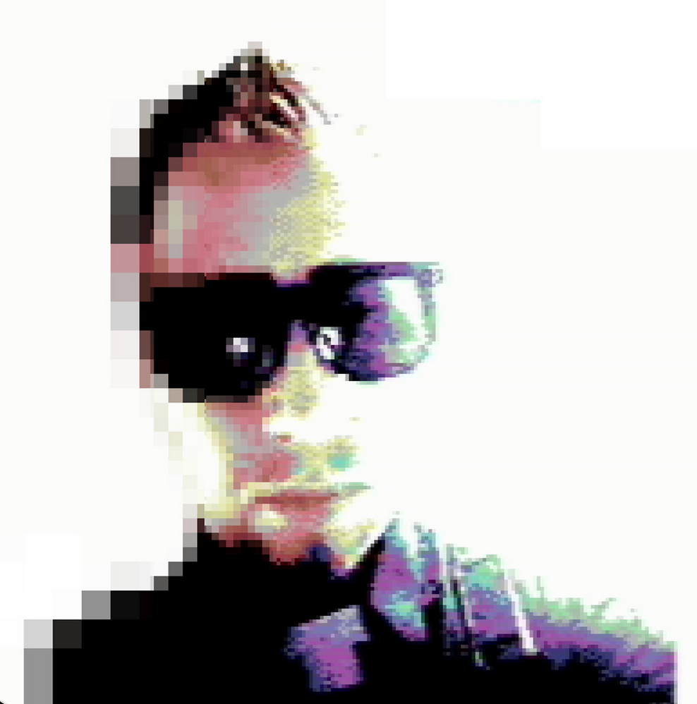

Hi, I'm M64!
I love pixels. Started pushing them around on a C64 in assembly. Never stopped loving the low level. Now I write systems code in Zig - low level networking, emulators, terminal graphics, the occasional game. When not coding, I'm soldering ESP32s or making music on Game Boys.
// Init
Systems programmer. C64 assembly → Intel assembly → C/C++ → Zig.
// Main Loop
Terminal graphics, animations, games (movy, upcoming projects) and tools. High-performance systems work (e.g. io_uring). LLM inference interfacing tools/apps.
// I/O
Electronics background - I like to play around with ESP32, STM32, and similar. Bridging circuits, code, sound, and pixels.